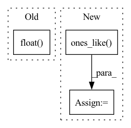

Pattern ID :30041
Before Change
threshold_low = float(clean_entropy[int(0.05 * len(clean_entropy))])
threshold_high = float(clean_entropy[int(0.95 * len(clean_entropy))])
print(f"Threshold: ({threshold_low:5.3f}, {threshold_high:5.3f})")
percent = float(((poison_entropy < threshold_low) +
(poison_entropy > threshold_high)).sum().float() / len(poison_entropy))
print("Classification Acc: ", percent)
def check(self, _input) -> torch.Tensor:After Change
print("Entropy Poison Median: ", float(poison_entropy.median()))
threshold_low = float(clean_entropy[int(0.05 * len(clean_entropy))])
threshold_high = float(clean_entropy[int(0.95 * len(clean_entropy))])
y_true = torch.cat((torch.zeros_like(clean_entropy), torch.ones_like( poison_entropy) ))
entropy = torch.cat((clean_entropy, poison_entropy))
y_pred = torch.where(((entropy < threshold_low).int() + (entropy > threshold_high).int()).bool(),
torch.ones_like(entropy), torch.zeros_like(entropy))In pattern: SUPERPATTERN
Frequency: 4
Non-data size: 3
Instances Fragment ID: 89208833
Project Name: ain-soph/trojanzoo
Commit Name: b252ab7e9a5f58cee299ad63b05fca46835a6b65
Time: 2020-09-13
Author: ain-soph@live.com
File Name: trojanzoo/defense/backdoor/strip.py
M Class Name: STRIP
N Class Name: STRIP
M Method Name: detect(1)
N Method Name: detect(1)
M Parent Class: Defense_Backdoor
N Parent Class: Defense_Backdoor
M File Name: trojanzoo/defense/backdoor/strip.py
N File Name: trojanzoo/defense/backdoor/strip.py
M Start Line: 35
M End Line: 43
N Start Line: 35
N End Line: 49
Before Change
// random speed
// delta t of first note?
time = time.float()
time = time * (1 + random.random()*self.speed*2 - self.speed)
// dequantize
// TODO: use actual tactus from MIDI file?
time = (After Change
end = torch.zeros_like(program)
end[-pad-1:] = 1
// compute binary mask for the loss
mask = torch.ones_like( program, dtype=torch.bool)
if pad > 0:
mask[-pad:] = False
// random slice Fragment ID: 89208832
Project Name: intelligent-instruments-lab/iil-python-tools
Commit Name: 78c2ab9e98adc304bebc8cff2541364d27d91dab
Time: 2022-04-15
Author: victor.shepardson@gmail.com
File Name: notepredictor/notepredictor/data.py
M Class Name: MIDIDataset
N Class Name: MIDIDataset
M Method Name: __getitem__(2)
N Method Name: __getitem__(2)
M Parent Class: Dataset
N Parent Class: Dataset
M File Name: notepredictor/notepredictor/data.py
N File Name: notepredictor/notepredictor/data.py
M Start Line: 33
M End Line: 104
N Start Line: 30
N End Line: 112
Before Change
if q != 2:
loss = loss**(q/2)
if distmat_mask is not None:
loss *= distmat_mask.float()
return loss.mean()
def rmsd_torch(X, Y):
Assumes x,y are both (B x D x N). See below for wrapper. After Change
if Y_mat is None:
Y_mat = torch.cdist(Y, Y, p=p)
if distmat_mask is None:
distmat_mask = torch.ones_like( Y_mat) .bool()
// **2 ensures always positive. Later scale back to desired power
loss = ( X_mat - Y_mat )**2
if q != 2: Fragment ID: 89208823
Project Name: lucidrains/alphafold2
Commit Name: 74c364aa5ef21e7f06c3e720564ae00cbdf7f96d
Time: 2021-04-04
Author: ericalcaide1@gmail.com
File Name: alphafold2_pytorch/utils.py
M Class Name: AnonimousClass
N Class Name: AnonimousClass
M Method Name: distmat_loss_torch(7)
N Method Name: distmat_loss_torch(5)
M Parent Class:
N Parent Class:
M File Name: alphafold2_pytorch/utils.py
N File Name: alphafold2_pytorch/utils.py
M Start Line: 752
M End Line: 757
N Start Line: 741
N End Line: 765
Before Change
for i in range(x.size(0)):
mask = Masks.get_ff_mask(height, width)
mask_all.append(mask)
mask = torch.from_numpy(np.asarray(mask_all)).unsqueeze(1).float()
ones = torch.ones(x.size(0), 1, x.size(2), x.size(3))
mask = ones * mask
if x.is_cuda:
mask = mask.cuda()After Change
def mask_image(x, config):
height, width, _ = config["image_shape"]
mask = torch.ones_like(x)
temp = torch.ones_like( x)
for i in range(x.size(0)):
mask_temp = Masks.get_ff_mask(height, width)
mask[i,:,:,:] = temp[i,:,:,:] * mask_temp
// mask_all.append(mask) Fragment ID: 89208826
Project Name: sayednadim/global-and-local-attention-based-free-form-image-inpainting
Commit Name: f42c7e888ac77a88b8ece8c9bf9adabba796d7ca
Time: 2020-08-05
Author: smnadimuddin@gmail.com
File Name: model/mask.py
M Class Name: AnonimousClass
N Class Name: AnonimousClass
M Method Name: mask_image(2)
N Method Name: mask_image(2)
M Parent Class:
N Parent Class:
M File Name: model/mask.py
N File Name: model/mask.py
M Start Line: 40
M End Line: 46
N Start Line: 40
N End Line: 44